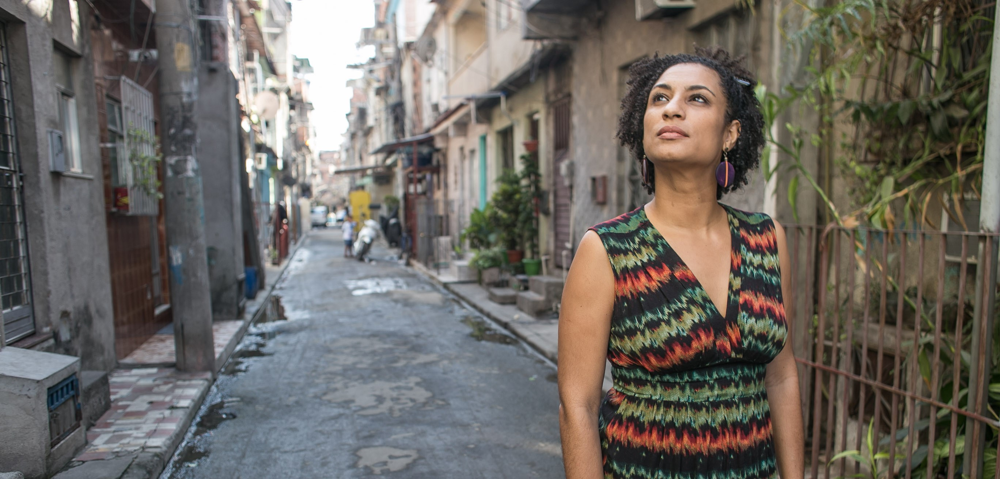

Marielle, presente!

Marielle Franco foi uma socióloga, política, feminista e defensora dos direitos humanos, eleita vereadora do Rio de Janeiro em 2016, assassinada em março de 2018. Nascida na favela da Maré, denunciava abusos de autoridade por parte de policiais contra moradores de comunidades carentes.
"Quantos mais vão precisar morrer para que essa guerra acabe?"
Sua História
Marielle Franco iniciou a militância pelos direitos humanos em 2000, após perder uma amiga vítima de bala perdida em uma troca de tiros entre policiais e traficantes. Graduou-se em Ciências Sociais pela PUC-Rio e concluiu um mestrado em Administração Pública pela UFF, com uma dissertação sobre as UPPs e a política de segurança pública no Rio de Janeiro.
Atuou por dez anos como assessora parlamentar de Marcelo Freixo e foi eleita vereadora na capital fluminense em 2016, com a quinta maior votação, em sua primeira disputa eleitoral.
Trabalhou na defesa dos direitos de mulheres, população LGBT, negros e moradores de favela, além de buscar o aumento da participação feminina na política. Presidiu a Comissão de Defesa da Mulher e integrou uma comissão criada para monitorar a intervenção federal no Rio de Janeiro.